#1 · QA2026-06-17 10:30 → 06-17 10:35
-44.0 pts
entry 30461.00 stop 30417.00 (−44.0 pts) target 30549.00 (2.0R) exit 30417.00 stop 破底 06-17 10:00 low=30320.00 (−67.8) 站上 10:10 MA10=30447.12 回踩 pierce 18.1 MA5 30485.0 / MA10 30447.1
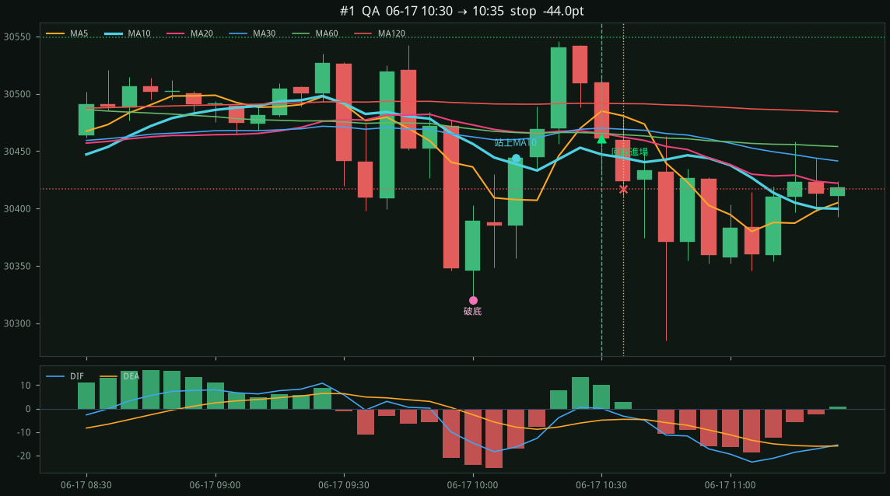
破底（4小時低點）→ 站上 MA10 → 回踩 MA10 做多 · 60d · 2026-06-16 00:05 → 2026-08-26 07:10 ET · bars=13637
QA 33筆 +7.1
漏斗：破底 61 → 站上MA10 128 → 進場 33（未站上 22 · 未回踩 5 · 再站上 74 · 刺太深 10 · MA10下彎 9 · 時段 63 · 風險 1）
entry 30461.00 stop 30417.00 (−44.0 pts) target 30549.00 (2.0R) exit 30417.00 stop 破底 06-17 10:00 low=30320.00 (−67.8) 站上 10:10 MA10=30447.12 回踩 pierce 18.1 MA5 30485.0 / MA10 30447.1

entry 30585.75 stop 30561.50 (−24.2 pts) target 30634.25 (2.0R) exit 30561.50 stop 破底 06-22 12:00 low=30503.00 (−199.8) 站上 13:15 MA10=30584.22 回踩 pierce 10.7 MA5 30590.6 / MA10 30584.2
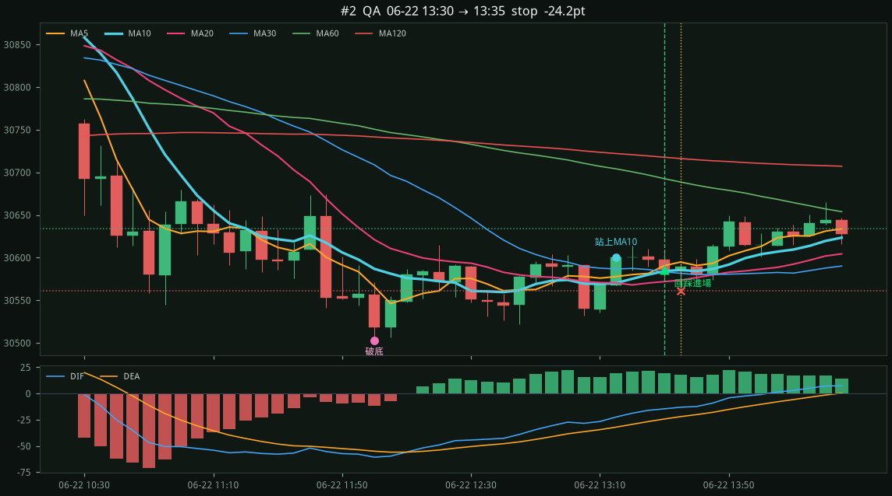
entry 29696.50 stop 29663.50 (−33.0 pts) target 29762.50 (2.0R) exit 29663.50 stop 破底 06-23 14:50 low=29577.25 (−116.0) 站上 15:20 MA10=29685.10 回踩 pierce 9.6 MA5 29710.0 / MA10 29685.1
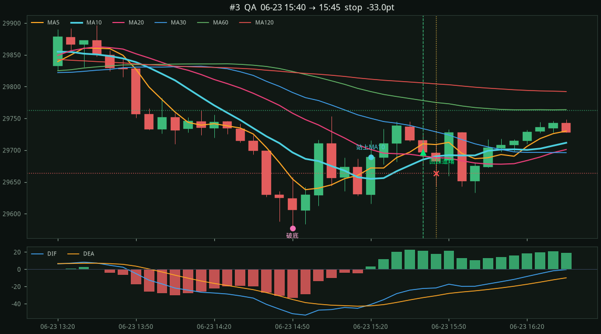
entry 29783.75 stop 29760.50 (−23.2 pts) target 29830.25 (2.0R) exit 29760.50 stop 破底 06-24 10:20 low=29525.00 (−167.5) 站上 10:25 MA10=29782.25 回踩 pierce 9.8 MA5 29835.7 / MA10 29782.2
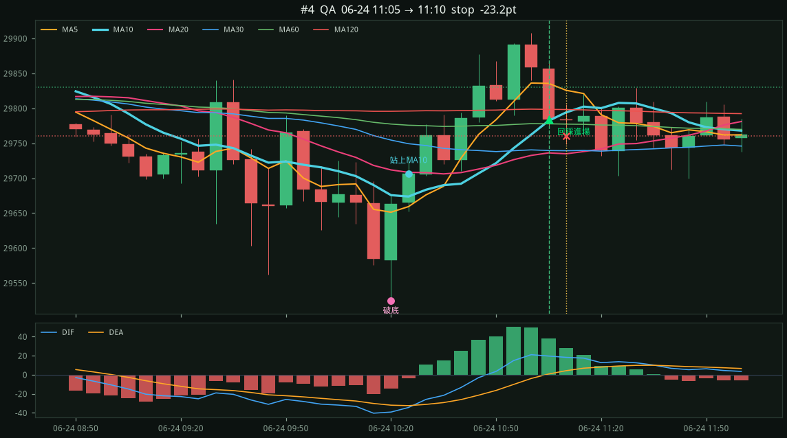
entry 29469.75 stop 29448.25 (−21.5 pts) target 29512.75 (2.0R) exit 29448.25 stop 破底 06-24 13:30 low=29364.75 (−160.2) 站上 14:05 MA10=29467.92 回踩 pierce 7.7 MA5 29513.3 / MA10 29467.9
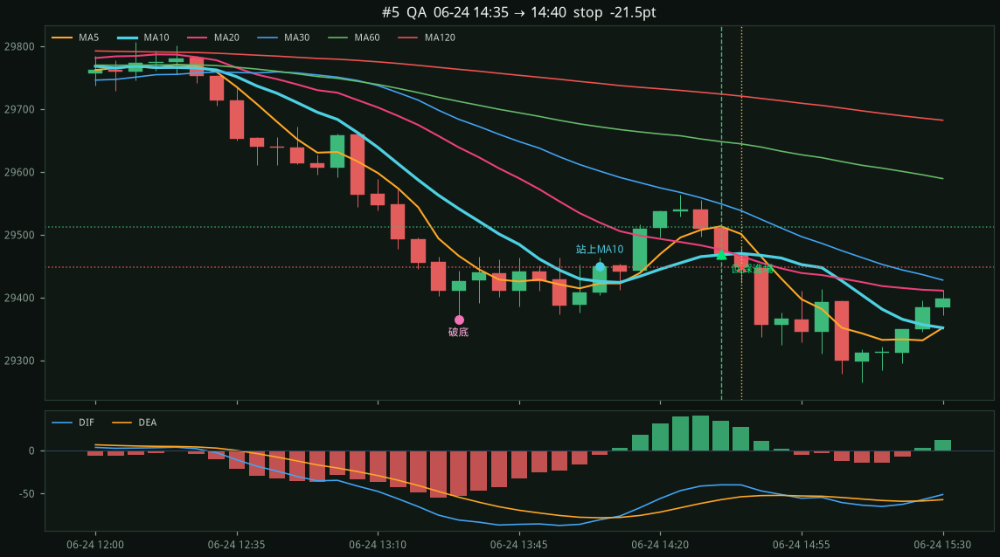
entry 29603.75 stop 29552.25 (−51.5 pts) target 29706.75 (2.0R) exit 29706.75 target 破底 06-25 09:55 low=29295.75 (−803.2) 站上 10:25 MA10=29569.55 回踩 pierce 5.3 MA5 29625.6 / MA10 29569.5
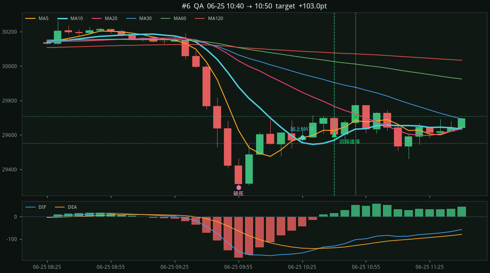
entry 29763.00 stop 29708.25 (−54.8 pts) target 29872.50 (2.0R) exit 29708.25 stop 破底 06-29 09:30 low=29557.00 (−63.0) 站上 09:40 MA10=29726.38 回踩 pierce 6.1 MA5 29758.0 / MA10 29726.4
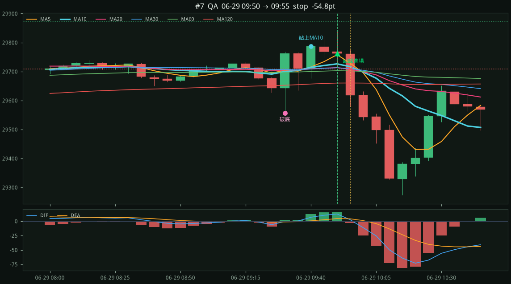
entry 29425.50 stop 29392.85 (−32.7 pts) target 29490.80 (2.0R) exit 29490.80 target 破底 07-02 13:55 low=29328.50 (−549.0) 站上 14:05 MA10=29404.85 回踩 pierce 0.0 MA5 29416.8 / MA10 29404.8
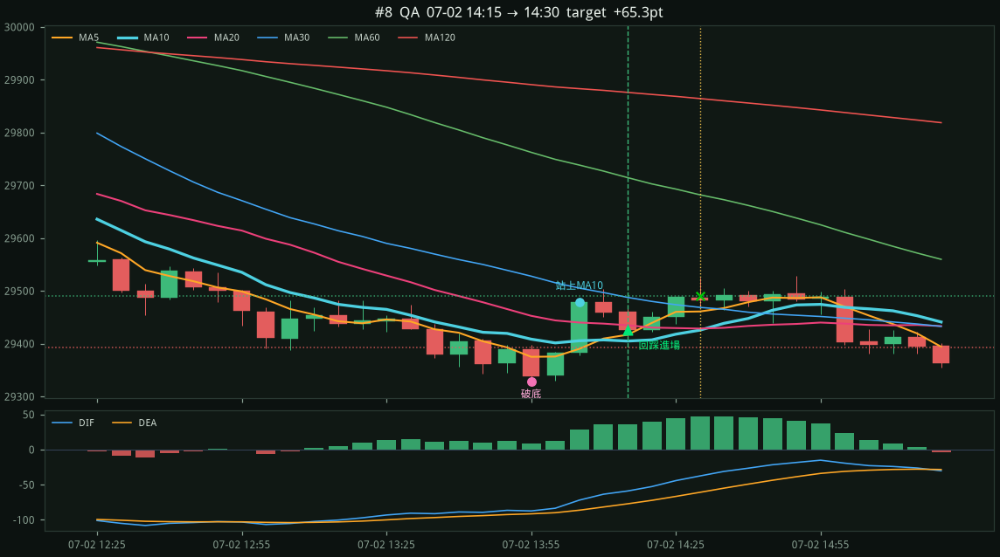
entry 29930.50 stop 29891.25 (−39.2 pts) target 30009.00 (2.0R) exit 30009.00 target 破底 07-06 09:30 low=29776.25 (−44.0) 站上 09:40 MA10=29904.45 回踩 pierce 1.2 MA5 29941.4 / MA10 29904.5
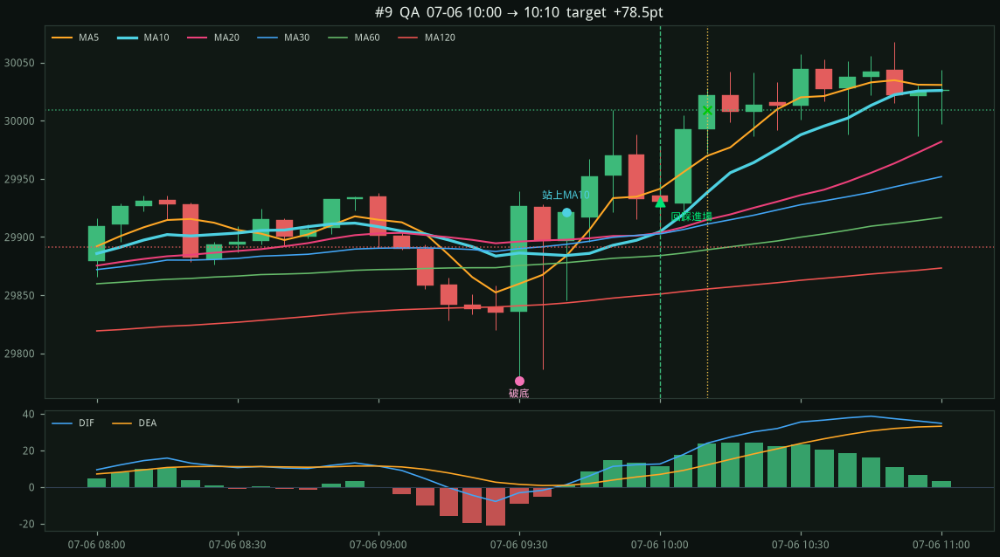
entry 29540.00 stop 29490.50 (−49.5 pts) target 29639.00 (2.0R) exit 29490.50 stop 破底 07-07 10:40 low=29210.00 (−370.0) 站上 11:40 MA10=29516.05 回踩 pierce 13.5 MA5 29531.5 / MA10 29516.0
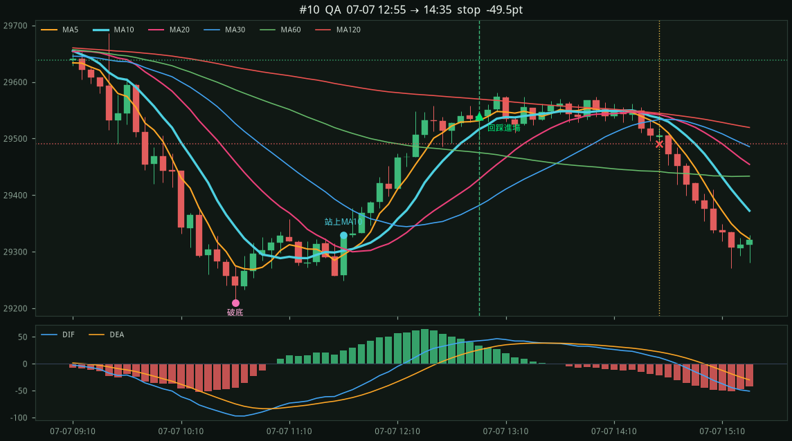
entry 30027.50 stop 29997.90 (−29.6 pts) target 30086.70 (2.0R) exit 29997.90 stop 破底 07-10 10:30 low=29675.00 (−96.2) 站上 11:45 MA10=30009.90 回踩 pierce 0.0 MA5 30020.3 / MA10 30009.9
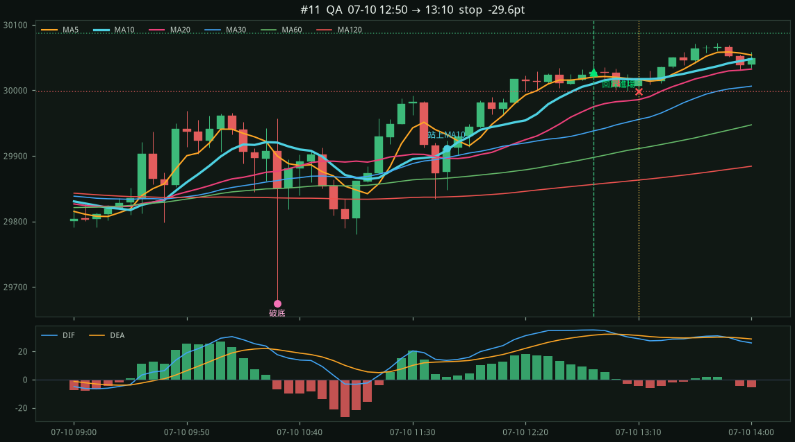
entry 29692.50 stop 29670.50 (−22.0 pts) target 29736.50 (2.0R) exit 29670.50 stop 破底 07-13 10:15 low=29488.50 (−122.2) 站上 10:55 MA10=29684.22 回踩 pierce 1.7 MA5 29690.5 / MA10 29684.2
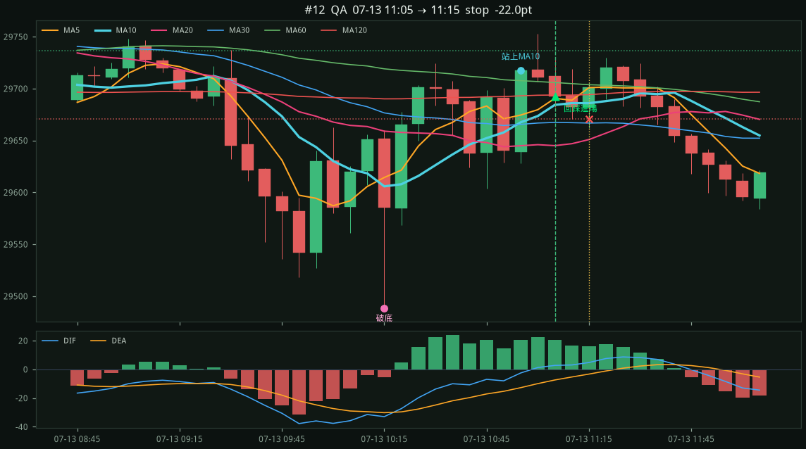
entry 29705.25 stop 29666.97 (−38.3 pts) target 29781.80 (2.0R) exit 29666.97 stop 破底 07-15 12:40 low=29397.00 (−434.0) 站上 12:45 MA10=29678.97 回踩 pierce 0.0 MA5 29705.6 / MA10 29679.0
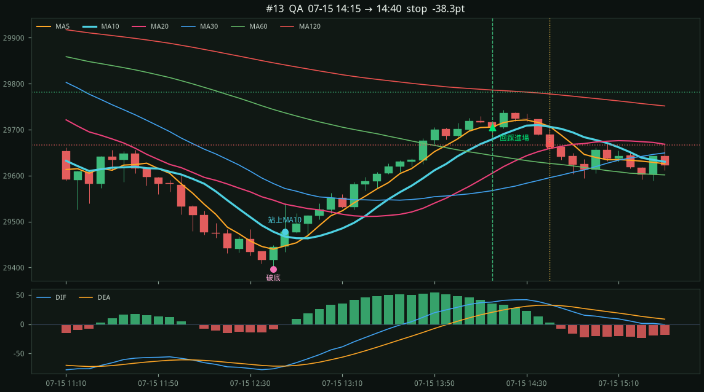
entry 29433.50 stop 29417.75 (−15.8 pts) target 29465.00 (2.0R) exit 29417.75 stop 破底 07-16 07:45 low=29361.00 (−67.0) 站上 09:00 MA10=29435.20 回踩 pierce 5.5 MA5 29458.5 / MA10 29435.2
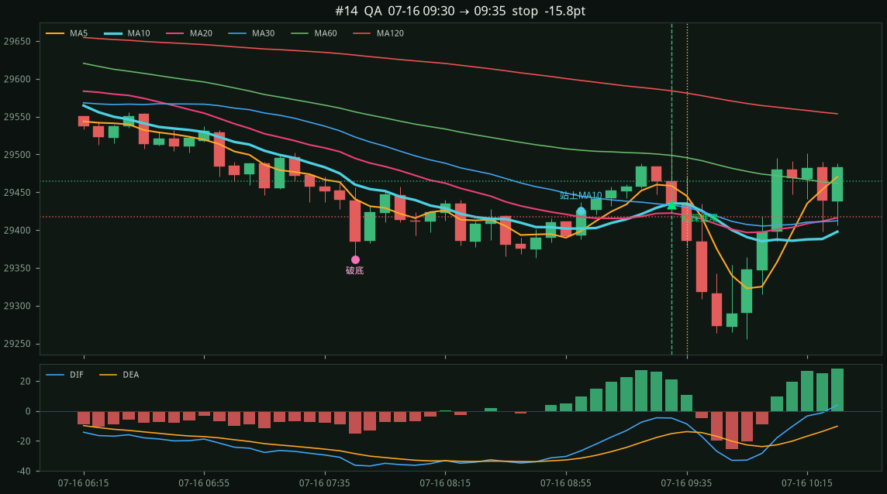
entry 28823.25 stop 28794.00 (−29.2 pts) target 28881.75 (2.0R) exit 28794.00 stop 破底 07-17 09:40 low=28408.25 (−172.8) 站上 09:50 MA10=28806.17 回踩 pierce 0.2 MA5 28841.0 / MA10 28806.2
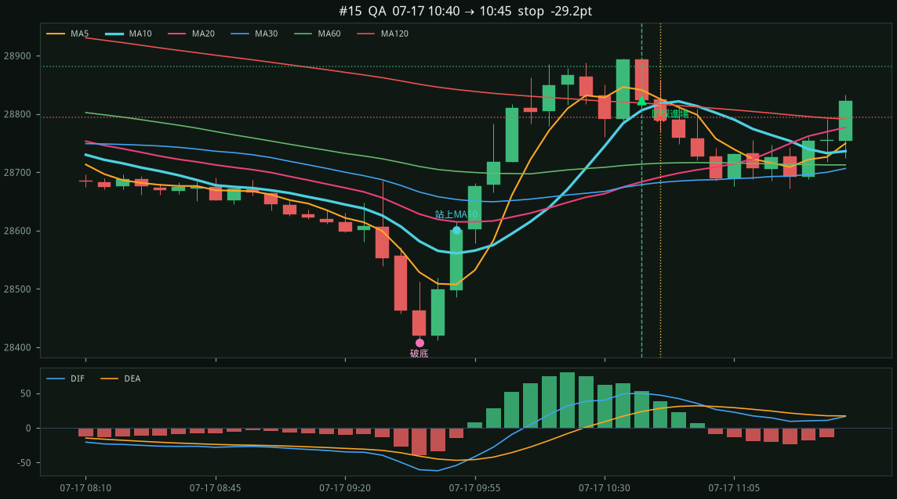
entry 29251.50 stop 29184.00 (−67.5 pts) target 29386.50 (2.0R) exit 29184.00 stop 破底 07-22 08:55 low=28952.00 (−43.0) 站上 09:00 MA10=29214.10 回踩 pierce 18.1 MA5 29249.2 / MA10 29214.1
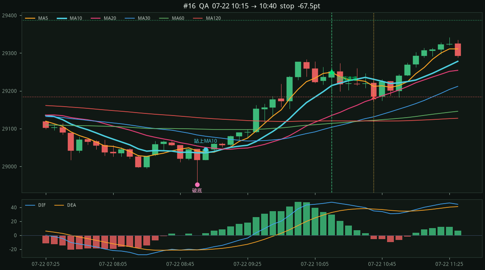
entry 28760.00 stop 28735.75 (−24.2 pts) target 28808.50 (2.0R) exit 28735.75 stop 破底 07-23 09:30 low=28657.00 (−40.0) 站上 09:30 MA10=28753.40 回踩 pierce 5.7 MA5 28778.0 / MA10 28753.4
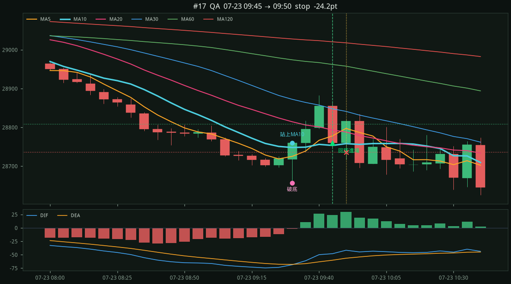
entry 28363.50 stop 28343.05 (−20.5 pts) target 28404.40 (2.0R) exit 28404.40 target 破底 07-24 10:45 low=28254.50 (−245.0) 站上 10:55 MA10=28355.05 回踩 pierce 0.0 MA5 28378.0 / MA10 28355.0
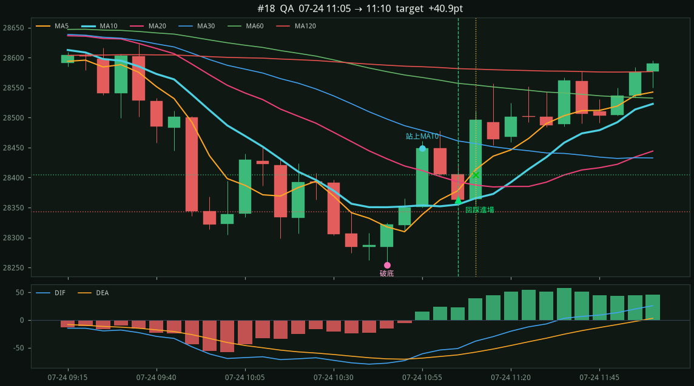
entry 28064.00 stop 28031.50 (−32.5 pts) target 28129.00 (2.0R) exit 28129.00 target 破底 07-27 10:40 low=27939.00 (−690.2) 站上 11:55 MA10=28056.60 回踩 pierce 13.1 MA5 28089.9 / MA10 28056.6
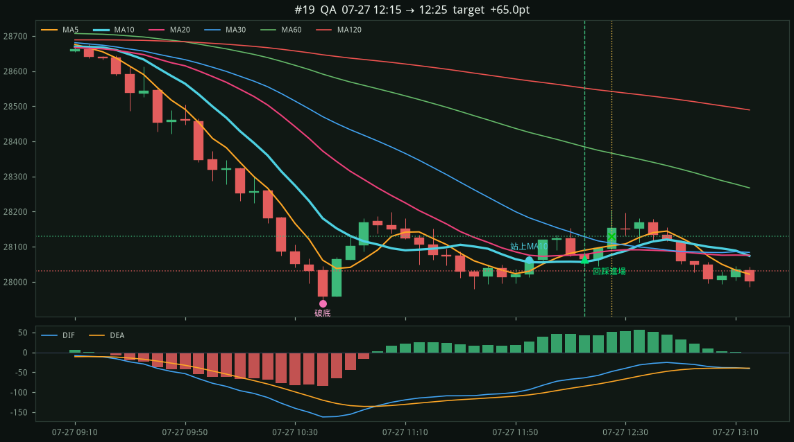
entry 27826.25 stop 27755.12 (−71.1 pts) target 27968.50 (2.0R) exit 27968.50 target 破底 07-28 10:15 low=27603.50 (−244.8) 站上 10:25 MA10=27767.12 回踩 pierce 0.0 MA5 27822.5 / MA10 27767.1
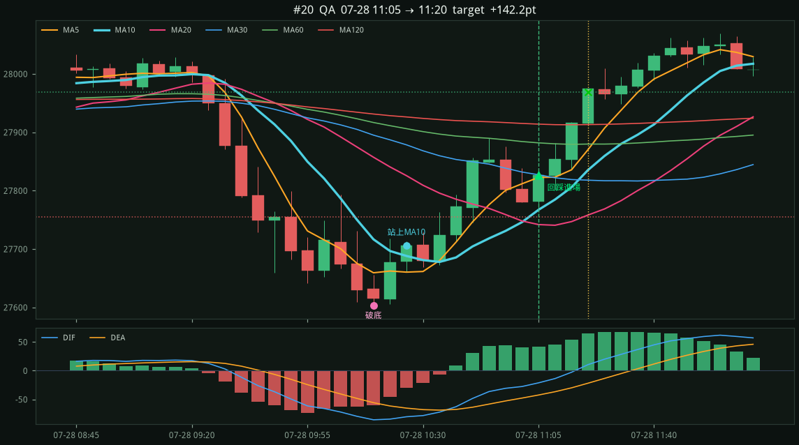
entry 27552.50 stop 27477.50 (−75.0 pts) target 27702.50 (2.0R) exit 27702.50 target 破底 07-29 12:15 low=27409.25 (−406.8) 站上 12:20 MA10=27496.45 回踩 pierce 7.0 MA5 27532.3 / MA10 27496.5
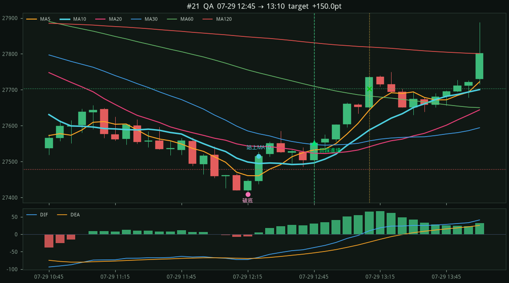
entry 28307.75 stop 28236.10 (−71.7 pts) target 28451.05 (2.0R) exit 28236.10 stop 破底 07-31 10:15 low=28079.75 (−336.0) 站上 10:35 MA10=28248.10 回踩 pierce 0.0 MA5 28296.2 / MA10 28248.1
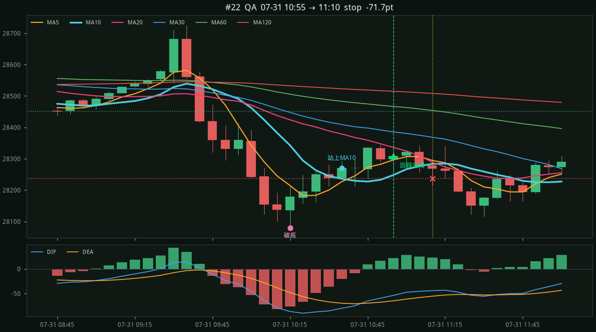
entry 28758.25 stop 28730.38 (−27.9 pts) target 28814.00 (2.0R) exit 28730.38 stop 破底 08-03 09:30 low=28313.50 (−70.0) 站上 09:45 MA10=28742.38 回踩 pierce 0.0 MA5 28779.6 / MA10 28742.4
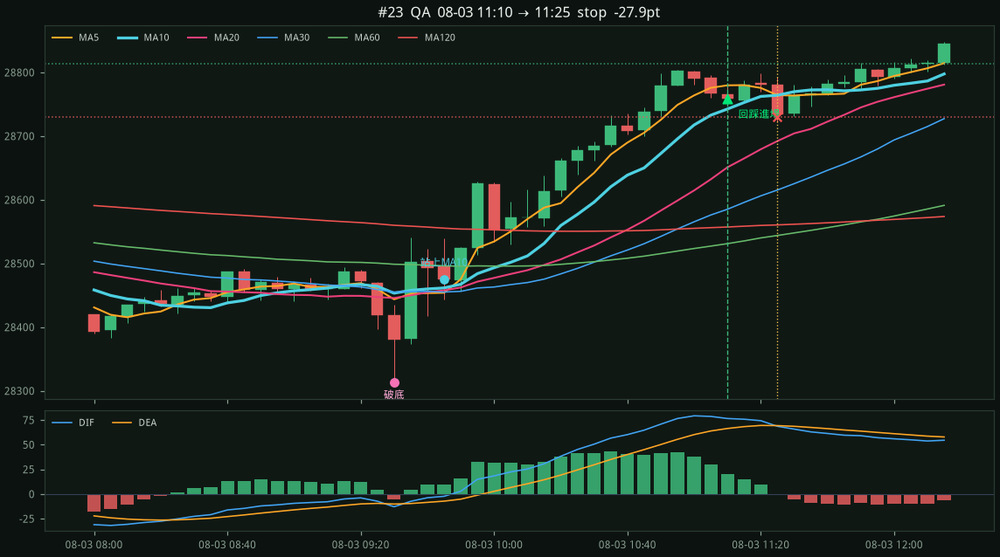
entry 29791.50 stop 29760.03 (−31.5 pts) target 29854.45 (2.0R) exit 29760.03 stop 破底 08-05 12:10 low=29702.00 (−61.5) 站上 12:25 MA10=29772.03 回踩 pierce 0.0 MA5 29800.5 / MA10 29772.0
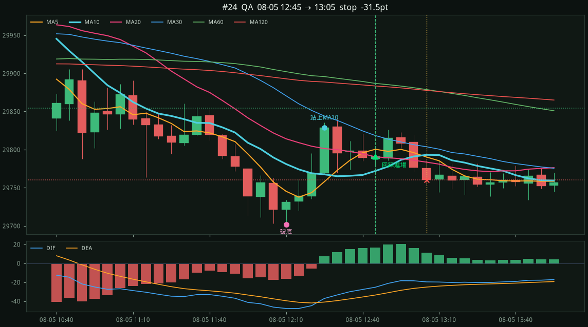
entry 29587.00 stop 29545.97 (−41.0 pts) target 29669.05 (2.0R) exit 29545.97 stop 破底 08-06 09:30 low=29241.25 (−85.0) 站上 09:35 MA10=29557.97 回踩 pierce 0.0 MA5 29610.0 / MA10 29558.0
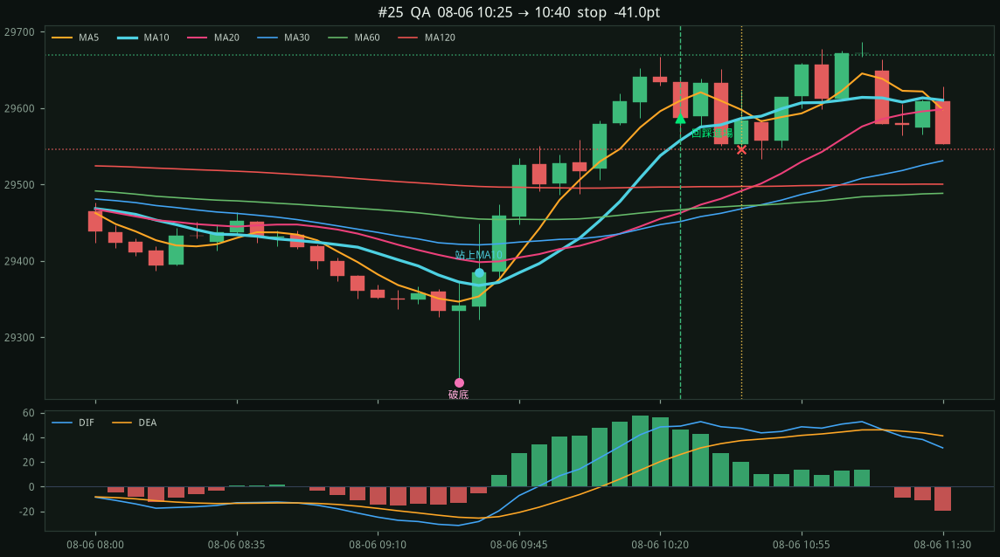
entry 29772.75 stop 29720.50 (−52.2 pts) target 29877.25 (2.0R) exit 29720.50 stop 破底 08-11 09:45 low=29631.75 (−94.8) 站上 10:00 MA10=29740.33 回踩 pierce 7.8 MA5 29761.8 / MA10 29740.3
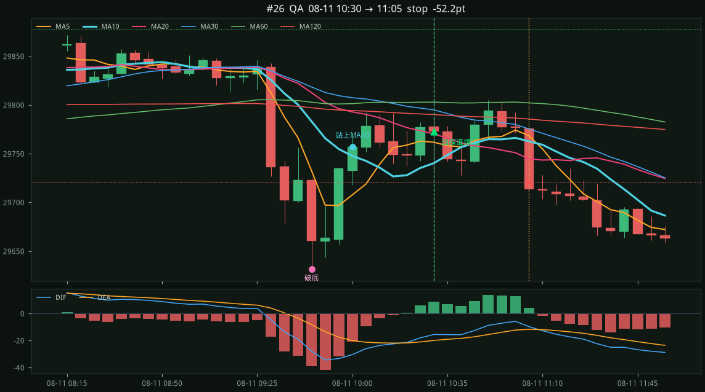
entry 30071.50 stop 30053.75 (−17.8 pts) target 30107.00 (2.0R) exit 30053.75 stop 破底 08-14 11:50 low=30028.50 (−59.5) 站上 11:55 MA10=30072.25 回踩 pierce 6.5 MA5 30085.6 / MA10 30072.2
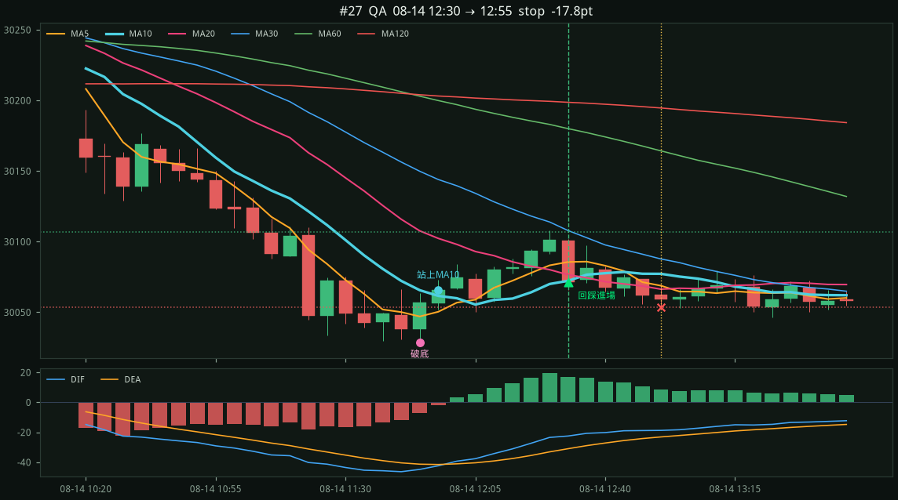
entry 29625.25 stop 29608.03 (−17.2 pts) target 29659.70 (2.0R) exit 29608.03 stop 破底 08-18 11:10 low=29514.00 (−164.0) 站上 11:25 MA10=29620.03 回踩 pierce 0.0 MA5 29636.7 / MA10 29620.0
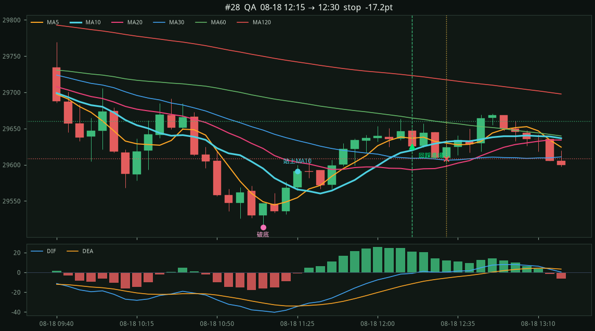
entry 29613.50 stop 29576.00 (−37.5 pts) target 29688.50 (2.0R) exit 29576.00 stop 破底 08-19 10:15 low=29375.75 (−131.0) 站上 10:25 MA10=29595.25 回踩 pierce 7.2 MA5 29608.7 / MA10 29595.2
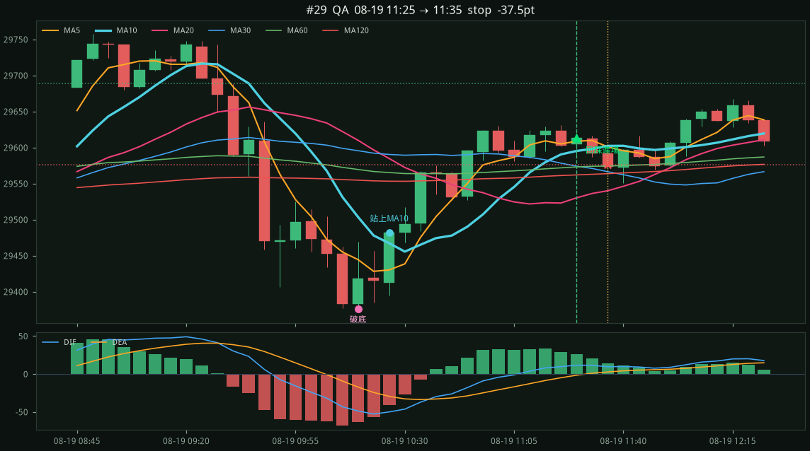
entry 29338.75 stop 29309.97 (−28.8 pts) target 29396.30 (2.0R) exit 29396.30 target 破底 08-20 08:35 low=29240.00 (−178.0) 站上 08:45 MA10=29321.97 回踩 pierce 0.0 MA5 29346.9 / MA10 29322.0
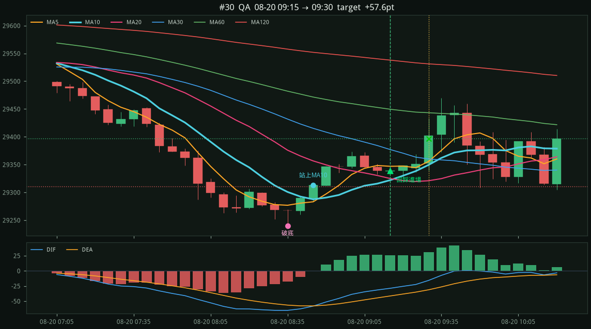
entry 29331.75 stop 29268.90 (−62.8 pts) target 29457.45 (2.0R) exit 29457.45 target 破底 08-21 10:20 low=29220.00 (−198.0) 站上 10:35 MA10=29280.90 回踩 pierce 0.0 MA5 29302.9 / MA10 29280.9
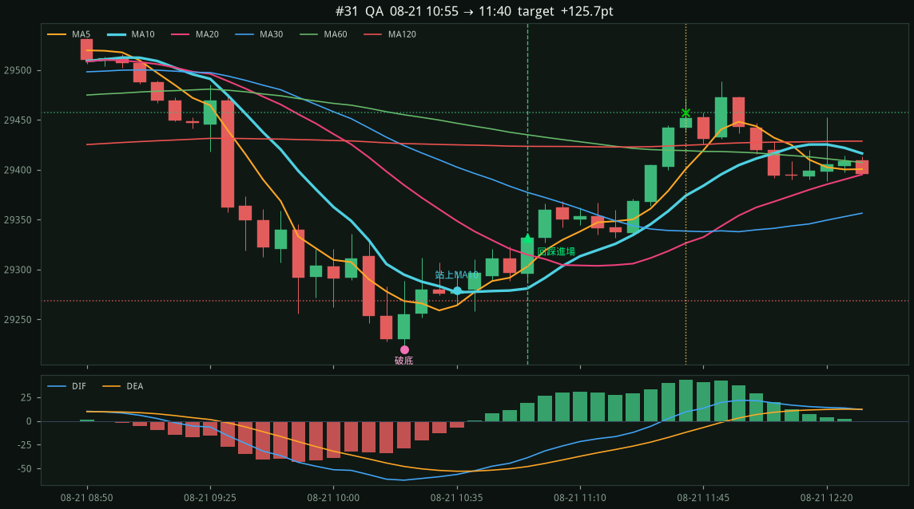
entry 29059.00 stop 29043.50 (−15.5 pts) target 29090.00 (2.0R) exit 29043.50 stop 破底 08-24 09:50 low=28946.75 (−199.0) 站上 10:20 MA10=29058.00 回踩 pierce 2.5 MA5 29086.2 / MA10 29058.0
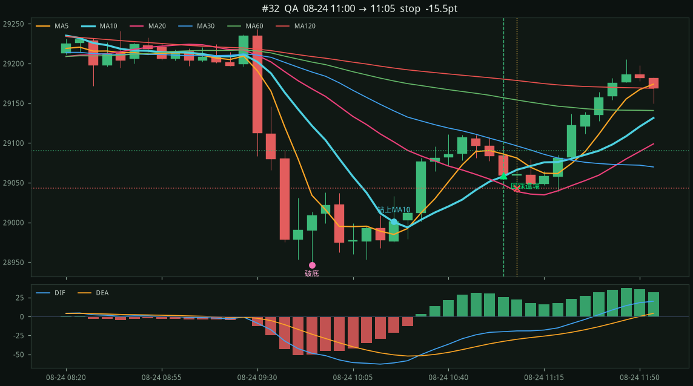
entry 29291.75 stop 29259.75 (−32.0 pts) target 29355.75 (2.0R) exit 29259.75 stop 破底 08-25 10:30 low=29138.00 (−71.2) 站上 11:50 MA10=29278.58 回踩 pierce 6.8 MA5 29289.2 / MA10 29278.6
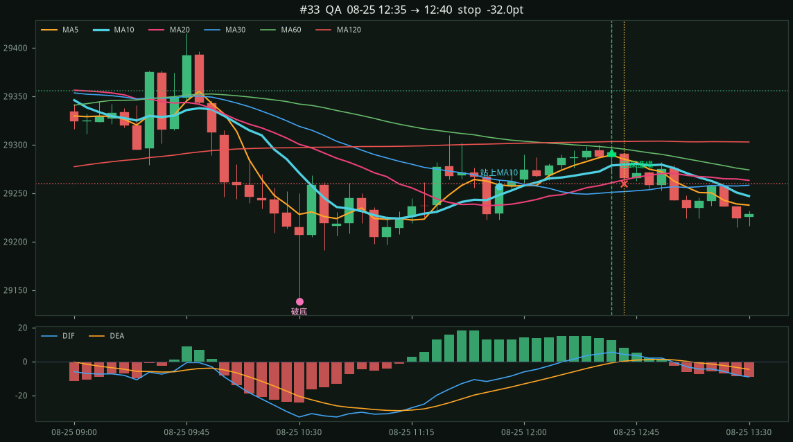